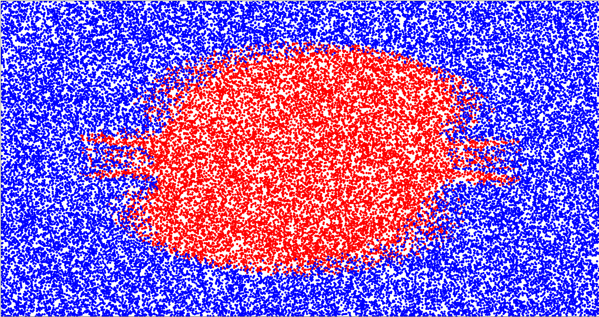

The Math of Reliability at Scale
Avishai Ish-Shalom (@nukemberg)
Notebook URL: http://fewbytes.com/reliability-notebook
Define "Reliable"
- "4 nines"
- MTBF
- Failures per Year
- QoS
- SLA
Define "Failure"
- Working properly
- Failure
- Fuzzy
The phase space
- Many "failure" states are equivalent
- Many more "failure" states than "working" states
- "Failure" statistically more likely
"Failure" is a bias!
The Hot Hand fallacy
The Gambler's fallacy
Past performance does not dictate future performance*
Reliability measures
- MTBF = mean time between failures (years per failure)
- λ = failures per year
- F = failure rate or probability of failure in year
- R = reliability rate (probability of working in year)
$$\lambda = T / MTFB$$
$$F = \lambda / T = 1 / MTBF$$
$$R = 1 - F$$
Serial reliability
$$R_{total} = \prod_{i=0}^{n} R_{i}$$
$$\lambda_{total} = \sum_{i=0}^{n} \lambda_{i}$$
Serial reliability
$$R_{total} \lt min(R_{i})$$
Best ROI - improve the worst component
Parallel reliability (redundancy)
Reliability of redundant system, up to k failures
$$R_{total}(n, k) = \sum_{i=0}^{k} {n \choose i} F^{i} R^{n-i}$$
Correlated failures
- Shared workload
- Shared code
- Shared infra
The Base rate fallacy
Dynamic failure modes
Chain Reaction